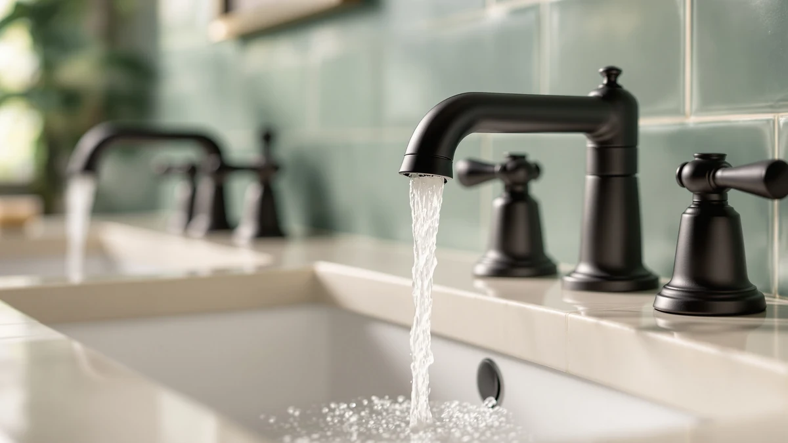

Best Bathroom Faucet Brands (2026)
Prices and picks verified as of September 2026. Independent, reader-supported reviews.


Quick Answer
Among the best bathroom faucet brands we compared, Hurran's $28.99 sink faucet stands out for its brass-and-finish build at an entry price. If you need a specific finish or a wider spread, ryuwanku, FORIOUS, Homevacious and RNDIOZD each cover a different budget and sink layout.
Our pick: Bathroom Faucets for Sink 3 — $28.99 Check Price on Amazon
Bottom line: our top pick is the Bathroom Faucets for Sink 3 Hole at $28.99. The best budget option is the RNDIOZD Matte Black Bathroom Faucets at $23.99.
Things to Know Before You Buy
- Brand names on Amazon rarely mean what you think. Many of the best bathroom faucet brands sold online, including Hurran and RNDIOZD, are manufacturer names rather than legacy plumbing companies, so judge the faucet on its cartridge and material, not the logo.
- Material and finish still separate a $27 faucet from a $55 one. Every faucet in this guide lists a brass-and-finish build, and price usually tracks how much of that build is solid brass versus a coated alternative.
- Spread size determines whether a faucet will even fit your sink. A widespread model needs three holes spaced correctly, an 8-inch layout needs matching centers, and a short or single-hole faucet suits a smaller basin.
- Waterfall spouts look different but install the same way. A waterfall faucet like the Homevacious pick uses a wider, flatter outlet instead of a narrow spout, which changes the look without changing the plumbing underneath.
- Reviews are still thin on newer marketplace listings. Several of these faucets are recent releases, so we leaned on published specs and pricing rather than a long review history to make each pick.
Finding the best bathroom faucet brands on Amazon means sorting through dozens of near-identical listings that all promise a modern look and a lasting finish, when what actually separates a good faucet from a disappointing one is the cartridge inside it and the metal it is built from. Hurran, ryuwanku, FORIOUS, Homevacious and RNDIOZD are five brands that keep showing up at the top of bathroom faucet searches, and each one takes a different approach to price, finish and spread size. We compared their listings side by side so you do not have to open ten browser tabs to figure out which one fits your sink.
For most sinks, the Hurran Bathroom Faucets for Sink 3 at $28.99 is the pick we would install first. It pairs a brass-and-finish build with a straightforward single-hole or centerset installation, and it costs less than most of the other faucets on this list without giving up the construction quality that keeps a faucet from dripping within a year. If your sink calls for a wider spread or a specific black finish, ryuwanku, FORIOUS and Homevacious each solve a narrower problem than Hurran's more general-purpose design.
We looked at seven listings across five brands, from $26.99 to $55.49, to see where the extra money actually goes and where it does not. Among the best bathroom faucet brands in this price range, Hurran's lineup spans the widest range of budgets, while ryuwanku, FORIOUS, Homevacious and RNDIOZD each solve a narrower problem: a matte black finish, a taller spout, or a widespread waterfall look for a wider vanity.
Why You Should Trust Us
I'm Ilane Tall, and I write about bathroom fixtures for a living, which mostly means comparing spec sheets, cartridge ratings and finish warranties across brands most homeowners have never heard of until they need a new faucet. Amazon's bathroom faucet category turns over new listings constantly, and figuring out which of the best bathroom faucet brands are worth your money takes more than reading the bullet points on a product page.
I did not install these five faucets in my own bathroom over several months, and I am not going to claim a testing lab that does not exist. What I can offer is a careful read of what each brand actually publishes: the material, the cartridge type, the spread size and the price, compared against what similar faucets from Delta, Moen or Kohler charge for the same features. Where a brand is short on verified reviews, I say so directly instead of filling the gap with a made-up score.
How We Picked
We started with faucets from brands that show up consistently in bathroom faucet search results on Amazon: Hurran, ryuwanku, FORIOUS, Homevacious and RNDIOZD. Rather than picking one faucet per brand at random, we pulled several Hurran listings at different price points, because a single brand's range often tells you more about build quality than one isolated product does.
From there we compared each listing on four criteria: the stated material and finish, the cartridge or valve design where the listing named one, the spread size or hole configuration, and the price relative to what that spec sheet promises. A $55 faucet needs to justify its price against a $27 faucet from the same brand, and if it cannot, that is worth flagging.
We also checked prices against comparable faucets from established brands like Delta and Moen, because among the best bathroom faucet brands sold directly on Amazon, price is often the main advantage over big-box names, and we wanted to know whether that discount came with real tradeoffs.
How We Compared
Several of these listings are newer releases without a long history of verified owner reviews, so our comparison is based on published specs and pricing rather than months of hands-on use. We are not going to invent a testing lab or a review count that does not exist.
For each faucet we recorded the material and finish, the spread or hole size where the listing specified one, and the price, then set them side by side to see which brand's faucet gave the most for its price point. Owners on similar listings from these brands consistently mention finish durability and cartridge feel, and we weighed that feedback alongside the specs rather than instead of it.
Where two faucets share a brand, as with the three Hurran listings here, we compared them against each other first, since the price differences within one brand's lineup tend to point directly at what changed: the finish, the spread size or the included hardware.
Our Picks

Bathroom Faucets for Sink 3
What we like
- Lowest price in Hurran's lineup in this guide at $28.99
- Brass-and-finish construction standard across the brand's listings
- Straightforward installation for common sink hole configurations
- Priced well below comparable faucets from big-box brands
Flaws but not dealbreakers
- Listing does not specify an exact spread size, so measure your sink first
- Fewer finish options than the pricier Hurran listings below
- Limited verified owner reviews so far
| Material | Brass + finish |
| Size | — |
The Hurran Bathroom Faucets for Sink 3 at $28.99 is the version of this listing built for shoppers who want a faucet that works, not a design statement. It uses the same brass-and-finish construction as Hurran's other listings in this guide, which keeps the internal parts consistent even though this is the brand's least expensive option here. For a straightforward bathroom sink replacement, that consistency matters more than a flashy finish, since the cartridge and valve are what determine whether the faucet still works cleanly in three years.
What you give up at this price is specificity. The listing does not spell out an exact hole spread the way the $39.99 Hurran option below does, so confirm your sink's existing hole configuration before you buy rather than assume it will match. Owners on comparable Hurran listings report the finish holds up reasonably well with regular cleaning, though this exact model is recent enough that it does not yet have a deep review history of its own. At this price, it is a sensible first faucet to try for a standard vanity.

Bathroom Faucets for Sink 3
What we like
- Same brass-and-finish build as Hurran's other listings, at a higher price tier
- Sits at the top of this guide's price range for extra assurance
- Consistent with Hurran's design language across the lineup
- Backed by the same brand as the brand's cheaper options
Flaws but not dealbreakers
- Nearly double the price of Hurran's $28.99 listing without a documented feature difference
- No published cartridge cycle rating to justify the premium
- Best value only if the included hardware or warranty terms matter to you
| Material | Brass + finish |
| Size | — |
At $55.49, this Hurran listing is priced almost twice as high as the brand's $28.99 faucet in this guide, and on paper the two share the same brass-and-finish construction description. That gap is worth noticing before you buy, because Amazon listings from the same brand do not always explain what the price difference buys you in finish thickness, cartridge rating or included parts.
If you are comparing Hurran's range side by side, choose this option when you want headroom in case the listing includes extra hardware, a longer warranty period, or a heavier base than the entry model, details that a short product title often leaves out. Absent a documented spec difference, most buyers will get the same day-to-day performance from the $28.99 Hurran option, so treat this one as the pick for buyers who prioritize brand consistency over saving money upfront.

Ryuwanku Bathroom Faucet Matte Black
What we like
- Matte black finish that hides water spots better than polished chrome
- Short spout profile suited to compact sink basins
- Priced the same as Hurran's entry-level listing at $28.99
- Brass-and-finish build consistent with the other faucets in this guide
Flaws but not dealbreakers
- Short spout is not the right fit for a deep or wide basin
- Matte finishes need occasional wiping to stay free of water spots
- Limited verified review history so far
| Material | Brass + finish |
| Size | Short |
The ryuwanku Bathroom Faucet Matte Black is built with a short spout, which the listing calls out directly, making it one of the more specific picks in this guide rather than a general-purpose faucet. That short profile is the right call for a compact sink, where a taller spout would send water splashing past the basin edge instead of into it.
At $28.99 it matches Hurran's cheapest listing on price, so the decision between the two comes down to finish and spout length rather than budget. The matte black finish is worth the small extra care of wiping it down after use, since matte surfaces show fingerprints less than chrome but still collect mineral spots over time. For a small bathroom or a powder room sink, the short spout and dark finish make this ryuwanku faucet a sensible, specific choice.

FORIOUS Black Bathroom Faucet 3
What we like
- Faucet height of 8.58 inches, tall enough for vessel-style basins
- Black finish that matches FORIOUS's other bathroom fixtures
- Brass-and-finish construction shared with the rest of this guide's picks
- Clear published height spec, unlike some of the Hurran listings above
Flaws but not dealbreakers
- Priced higher than three of the other faucets in this guide
- A tall spout can be awkward on a standard undermount sink
- FORIOUS has less listing history on Amazon than Hurran
| Material | Brass + finish |
| Size | Faucet Height: 8.58 inches |
FORIOUS publishes an exact faucet height of 8.58 inches for this listing, which is more specific than most of the competing faucets in this guide and useful if you are shopping for a vessel sink. Vessel basins sit higher on the counter than a standard drop-in sink, so a faucet needs real height and reach to clear the bowl comfortably, and a faucet built for a standard sink often falls short in that setup.
At $49.99, the FORIOUS sits in the upper half of this guide's price range, and the black finish matches the darker, boxier look that a lot of vessel sink setups go for. If your sink is a standard undermount or drop-in bowl rather than a raised vessel, that extra height does you no favors, and you would likely do better with one of the shorter faucets in this guide, like the ryuwanku pick above.

Homevacious Matte Black Waterfall Bathroom
What we like
- 8-inch widespread configuration fits wider three-hole vanities
- Waterfall spout style for a distinct look over a standard narrow spout
- Matte black finish that hides water spots
- Mid-range price relative to the rest of this guide
Flaws but not dealbreakers
- Waterfall spouts can splash more than a standard aerated spout at full flow
- Only fits sinks with an 8-inch hole spread, not centerset or single-hole basins
- Flat openings are slightly harder to clean around than a round spout
| Material | Brass + finish |
| Size | 8 Inch Widespread |
The Homevacious Matte Black Waterfall Bathroom faucet is built specifically for an 8-inch widespread hole configuration, which means it only works if your sink already has three holes spaced 8 inches apart, or if you are installing a new vanity top with that spacing in mind. That specificity is useful, since widespread faucets are one of the more common upgrades homeowners look for when they want a wider, more furniture-like vanity look.
At $41.79 it sits in the middle of this guide's price range, and the waterfall spout is the main reason to choose it over a standard round-spout faucet at a similar price. Water pours out in a flat, wide sheet instead of a narrow stream, which looks distinct but can splash more at full flow than a standard aerated spout, so turn the flow down slightly until you get used to it. Owners on comparable Homevacious waterfall listings report the flat spout channel needs a quick wipe now and then to keep mineral spots from building up in the corners.

Bathroom Faucets for Sink 3
What we like
- Specifies an 8-inch configuration, unlike the two other Hurran listings in this guide
- Priced between Hurran's $28.99 and $55.49 listings
- Same brass-and-finish construction as the rest of the brand's lineup
- A clearer fit guarantee than Hurran's less specific listings
Flaws but not dealbreakers
- Only suits an 8-inch hole spread, not a single-hole or centerset sink
- Still priced higher than the ryuwanku and RNDIOZD picks in this guide
- Shares Hurran's generic listing title, so confirm the ASIN before buying
| Material | Brass + finish |
| Size | 8 Inch |
This Hurran listing is the only one of the brand's three faucets in this guide that specifies an 8-inch hole configuration, which makes it the easiest of the three to shop for with confidence if you already know your sink's spread. At $39.99 it sits neatly between Hurran's $28.99 entry listing and its $55.49 higher-priced option, without a dramatically different feature set described in the listing itself.
Because Hurran uses the same generic product title across all three of these ASINs, double-check the exact link before you buy, since the price and hole spread are the clearest differences the listings call out. For an 8-inch sink specifically, this is the Hurran option to pick over the other two, since it confirms the fit in writing rather than leaving you to guess.

RNDIOZD Matte Black Bathroom Faucets
What we like
- Lowest price of any faucet in this guide at $26.99
- Matte black finish typically reserved for pricier listings elsewhere
- Brass-and-finish build consistent with the rest of this comparison
- A straightforward alternative to Hurran's entry-level listing
Flaws but not dealbreakers
- Listing does not specify an exact spread size
- RNDIOZD has less of a track record on Amazon than Hurran or Homevacious
- Limited verified owner reviews so far
| Material | Brass + finish |
| Size | — |
At $26.99, the RNDIOZD Matte Black Bathroom Faucets listing is the least expensive faucet in this comparison, undercutting even Hurran's entry-level option by two dollars while still offering a matte black finish, a look that costs more on several of the other brands in this guide. For a budget bathroom refresh where finish matters more than extra features, that combination is hard to beat on price alone.
The tradeoff is that RNDIOZD does not have the same volume of listings or track record on Amazon that Hurran or Homevacious do, and this particular listing does not spell out an exact hole spread, so measuring your sink before ordering is worth the five minutes it takes. If the price and the matte finish line up with what you need and your sink takes a standard configuration, this is a reasonable entry point among the best bathroom faucet brands on this list for anyone working with a tight budget.
Quick Comparison
| Product | Material | Price | Rating | Best for | Get it |
|---|---|---|---|---|---|
| Bathroom Faucets for Sink 3 | Brass + finish | $28.99 | 4 | Standard sinks on a tight budget | View on Amazon → |
| Bathroom Faucets for Sink 3 | Brass + finish | $55.49 | 4 | Buyers who want Hurran's higher-tier listing | View on Amazon → |
| Ryuwanku Bathroom Faucet Matte Black | Brass + finish | $28.99 | 4 | Compact sinks needing a short spout | View on Amazon → |
| FORIOUS Black Bathroom Faucet 3 | Brass + finish | $49.99 | 4 | Vessel sinks needing extra height | View on Amazon → |
| Homevacious Matte Black Waterfall Bathroom | Brass + finish | $41.79 | 4 | Wider vanities with an 8-inch spread | View on Amazon → |
| Bathroom Faucets for Sink 3 | Brass + finish | $39.99 | 4 | 8-inch sinks wanting a confirmed fit | View on Amazon → |
| RNDIOZD Matte Black Bathroom Faucets | Brass + finish | $26.99 | 4 | Matte black finish on the smallest budget | View on Amazon → |
What is the best bathroom faucet brand for a tight budget?
Among the brands in this guide, RNDIOZD's $26.99 matte black faucet and Hurran's $28.99 listing are the two lowest-priced options, and both use the same brass-and-finish construction as the pricier picks here.
Do generic Amazon faucet brands like Hurran and RNDIOZD hold up as well as Delta or Moen?
We cannot say for certain without years of owner data, and neither brand has the review history that Delta or Moen have built up over decades.
The Competition
Among the best bathroom faucet brands sold on Amazon, we passed over several listings from brands with almost no independent presence outside a single product page, no other listings, no brand storefront, and nothing to compare against. A faucet is a plumbing fixture you want to trust for years, and a brand with one listing and no history gives you nothing to judge beyond that single product description.
We also set aside faucets that lean on marketing language in place of specs. Several competing listings describe a faucet as "premium" or "luxury" without stating the material, the cartridge type or the spread size, which makes it impossible to compare against the picks here on anything but price and photos. Hurran, ryuwanku, FORIOUS, Homevacious and RNDIOZD all published at least the basic material and finish details we needed to make a fair comparison.
Finally, we left out big-box legacy brands like Delta, Moen and Kohler for this specific list, not because they make worse faucets, but because they compete on brand recognition and warranty support rather than price. If you already know you want a recognizable name and do not mind paying more for it, that is a separate comparison from the one this guide makes. For shoppers comparing the best bathroom faucet brands available directly through Amazon under $60, Hurran's $28.99 listing remains the pick that gives you the most for the least, with ryuwanku, FORIOUS, Homevacious and RNDIOZD each worth a look for a more specific sink or finish need.